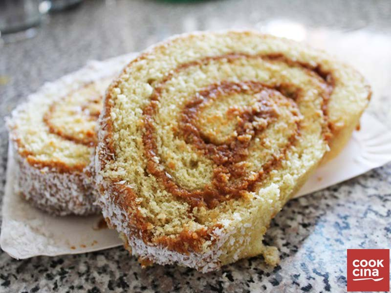

Lomo De Cerdo

Suele prepararse frito o a la plancha, es muy frecuente que esté acompañado de patatas fritas como guarnición. En España es muy frecuente el uso de los lomos en adobo y posteriormente son incluidos en los bocadillo (montado de lomo). En otras ocasiones se suele preparar relleno de verduras. Una de las preparaciones más habituales es embuchado, es decir seco al aire. El lomo embuchado se suele cortar en finas rodajas y servirse en tapas o en bocadillos. Aunque tradicionalmente se consume más en embutido (lomo embuchado), en filetes también se puede consumir. En la sartén con ajitos, sólo a la plancha o a la parrilla, en guisos como a la riojana… Es el costillar sin hueso y pesa alrededor de 2 kg.

Camilo:Que buena info.

Andrea:No me gusto mucho como me quedo.
Fernando:Le dire a mi madre que me prepate uno.
Brazo De Reina
Para el armado: Con ayuda de una cintura, intercalar capas de las distintas preparaciones en el siguiente orden : bizcocho de chocolate, crema montada con cerezas, bizcocho de chocolate, palette de cerezas y mousse de chocolate. Dejarla reposar en frío, retirar la cintura y decorar con copos de mousse de chocolate trufas de chocolate, merengues, cerezas amaneras y pétalos de flores comestibles.
Camilo:Se ve super apetitoso.